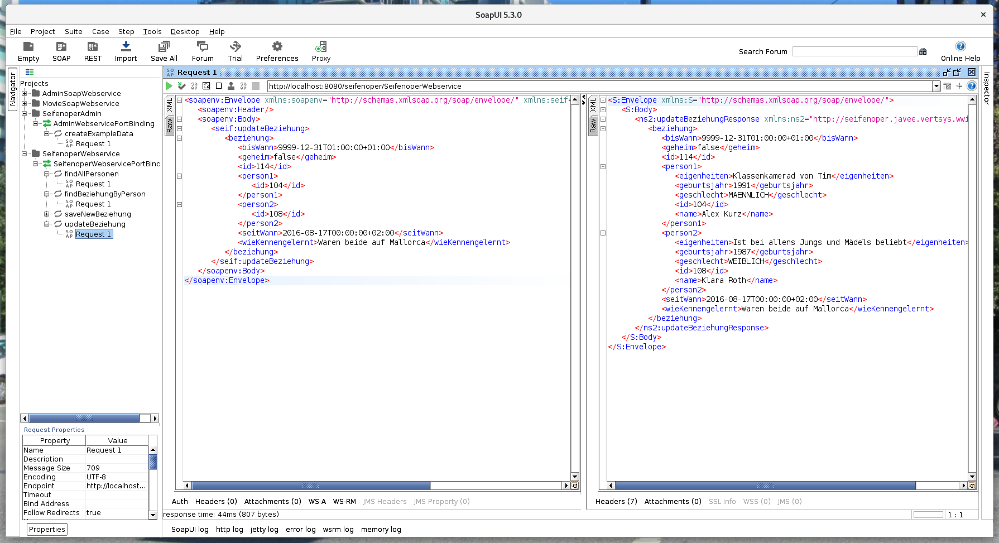

Was liegt näher, als mit SOAP eine Daily Soap zu programmieren? 💘 Du weißt schon, diese täglichen Serien im Vorabendprogramm,
die sich immer um den Alltag derselben Personen drehen. 💑 Hierfür haben wir auf Moodle eine Vorlage mit dem Datenmodell
vorbereitet. Lade diese herunter und importiere sie in Netbeans.
a) In der Vorlage ist bereits eine Klasse namens AdminWebservice mit der Methode createExampleData
enthalten. Vervollständige die Methode so, dass weitere Datensätze für Personen und Beziehungen in der Datenbank abgelegt werden.
b) Schreibe eine neue Klasse namens SeifenoperWebservice, die einen SOAP-Webservice mit folgenden Operationen anbietet:
-
List<Person> findAllPersonen()
-
List<Beziehung> findBeziehungByPerson(Person person)
-
Beziehung saveNewBeziehung(Beziehung beziehung)
-
Beziehung updateBeziehung(Beziehung beziehung)
Nutze die vorgegebenen Methoden der PersonBean und BeziehungBean zum Ausprogrammieren der Methoden.
Achte dabei darauf, dass die Methodenparameter und Rückgabewerte sprechende Namen im XML erhalten.

Admin-Webservice
@Stateless
@WebService(serviceName = "seifenoper")
public class AdminWebservice {
@EJB
private BeziehungBean beziehungBean;
@EJB
private PersonBean personBean;
@WebMethod
@WebResult(name = "status")
public String createExampleData() throws ParseException {
// Alte Einträge komplett löschen
for (Beziehung beziehung : this.beziehungBean.findAll()) {
this.beziehungBean.delete(beziehung);
}
for (Person person : this.personBean.findAll()) {
this.personBean.delete(person);
}
// Neue Personen anlegen
Person joeCool = new Person("Joe Cool", 1983, Geschlecht.MAENNLICH,
"Der Schwarm aller Frauen");
this.personBean.saveNew(joeCool);
Person gerdFleißig = new Person("Gerd Fleißig", 1971, Geschlecht.MAENNLICH,
"Ist mit seiner Arbeit verheiratet");
this.personBean.saveNew(gerdFleißig);
Person juliaHofer = new Person("Julia Hofer", 1982, Geschlecht.WEIBLICH,
"War mal mit Gerd zusammen");
this.personBean.saveNew(juliaHofer);
…
// Neue Beziehungen anlegen
SimpleDateFormat sdf = new SimpleDateFormat("yyyy-M-dd");
Beziehung beziehung;
beziehung = new Beziehung(joeCool, juliaHofer, sdf.parse("2016-12-03"), false,
"Haben sich auf dem Weihnachtsmarkt kennengelernt");
this.beziehungBean.saveNew(beziehung);
beziehung = new Beziehung(gerdFleißig, juliaHofer, sdf.parse("1996-04-21"),
sdf.parse("2001-10-10"), false, "Haben zusammen studiert");
this.beziehungBean.saveNew(beziehung);
…
// Status zurückgeben
return "OK";
}
}
Seifenoper-Webservice
@Stateless
@WebService(serviceName = "seifenoper")
public class SeifenoperWebservice {
@EJB
private BeziehungBean beziehungBean;
@EJB
private PersonBean personBean;
@WebMethod
@WebResult(name = "person")
public List<Person> findAllPersonen() {
return this.personBean.findAll();
}
@WebMethod
@WebResult(name = "beziehung")
public List<Beziehung> findBeziehungByPerson(@WebParam(name = "personId") long personId) {
Person person = this.personBean.findById(personId);
return this.beziehungBean.findByPerson(person);
}
@WebMethod
@WebResult(name = "beziehung")
public Beziehung saveNewBeziehung(@WebParam(name = "beziehung") Beziehung beziehung) {
return this.beziehungBean.saveNew(beziehung);
}
@WebMethod
@WebResult(name = "beziehung")
public Beziehung updateBeziehung(@WebParam(name = "beziehung") Beziehung beziehung) {
return this.beziehungBean.update(beziehung);
}
}